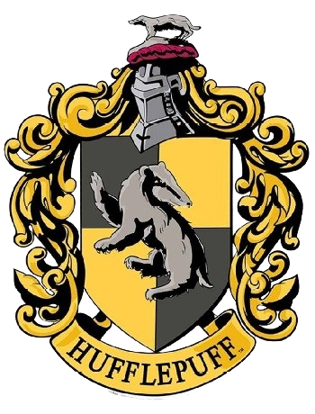

⮪ INICIO
HUFFLEPUFF
La casa de hufflepuff fue fundada por Helga Hufflepuff. Los
colores
de esta casa son el amarillo y el negro carbón, y el símbolo es un tejón
negro;
su
reliquia es la copa de Helga Hufflepuff. El jefe de la casa es Pomona Sprout
y su fantasma asociado es el Fraile gordo.
En esta casa se buscan
alumnos
que
entre
sus
cualidades sean leales, honestos y trabajadores.